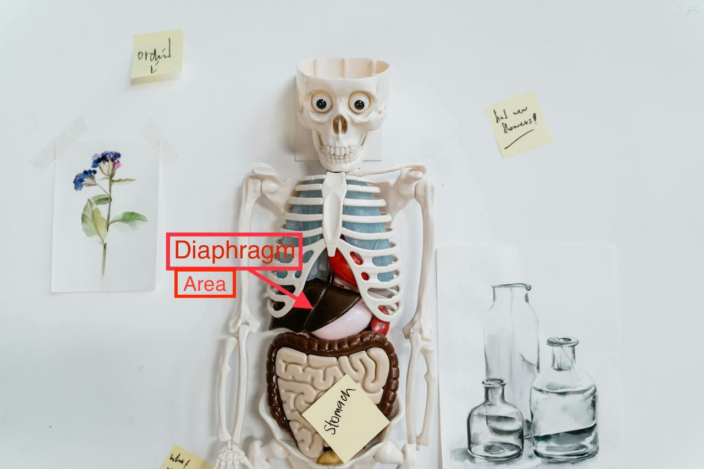
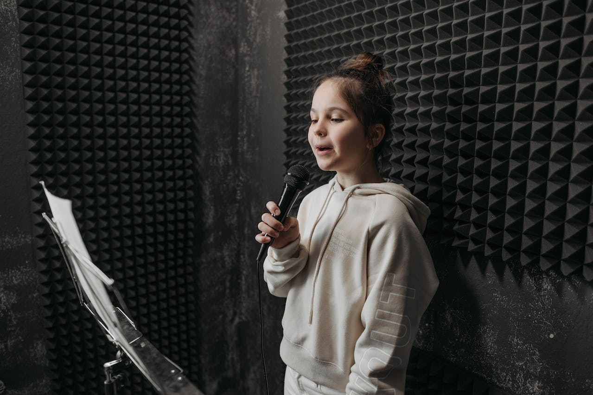

Vocal Techniques
Welcome to the Vocal Techniques Blog by Voice Coach Mecia, your ultimate resource for mastering the intricacies of vocal artistry. As a seasoned vocal coach deeply passionate about empowering singers, I'm thrilled to share my expertise and insights to help you unlock your vocal potential. In this blog, we'll explore a wide range of vocal techniques, from breath control and vocal warm-ups to phrasing and expression. Whether you're a beginner eager to build a strong foundation or an experienced vocalist seeking to refine your skills, you'll find practical tips and exercises tailored to enhance your singing prowess. Join me on this journey as we dive into the fascinating world of vocal technique and unleash the full beauty and power of your voice. Welcome to the Vocal Techniques Blog—where every note becomes a masterpiece.
Breath Support
Post No. 1 2024
Imagine you're singing along to your favorite song. It's the best part of the song, you know that section when the artist holds out that big long note. You decide to just "go for it!" As you start to belt out and hold that big long note, suddenly your voice begins to shake and crack and you run out of air. Gasping, to take your next breath, you realize that you totally missed the mark! Sound familiar? Have you ever felt short of breath as you struggled to hold out a note when singing a verse of a song? Cultivating proper Breath Support will allow you to have more breath control. Breath Support is pivotal in order to sustain each pitch duration accurately while singing. Learning to engage your diaphragm while singing will allow you to achieve appropriate breath support. The diaphragm is a muscle that sits below the lungs and plays a crucial role in the process of breathing.
Example
Posture
Post No. 2 2024
Can you think back to the last time you heard a band perform live. How did they sound? How well were the acoustics? Hopefully when the musicians performed they were sure to position each instrument so the listeners or audience could enjoy their melodic sounds. You may have heard the expression “Your body is an instrument.” This is true for every singer regardless of your experience. Hence, to develop skills for a “solid singing technique” good Posture is key. Posture is import when singing as proper stance for singing allows air to flow freely down your windpipe and pass through your lungs allowing your listeners to enjoy your melodic sounds too.
